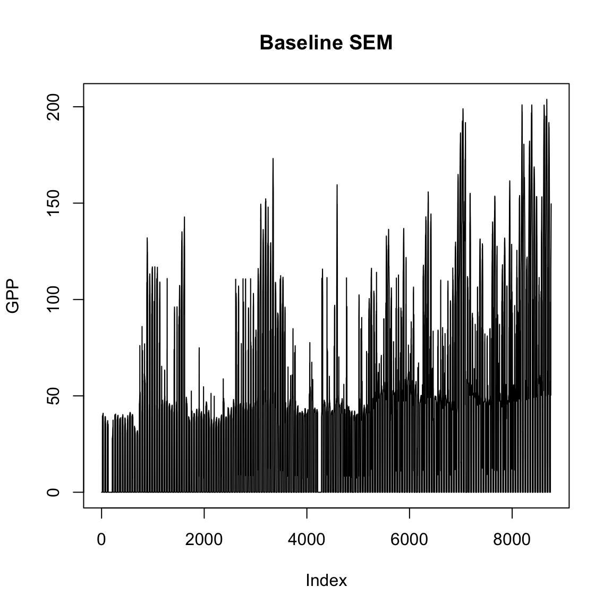

Install PestED
# Define the path to the netcdf file containing the meteorology inputs. nc_path <- system.file('extdata/AMF_USMe2_2005_L2_GF_V006.nc', package = 'PestED') # Format the inputs into the SEM required format. met_inputs <- format_inputs(nc_path)
Now that the inputs are set up let’s run SEM.
baseline <- iterate.SEM(pest = c(0, 0, 0, 0, 0), # Disturb none of the carbon pools. inputs = met_inputs, # Read in the met inputs. params = PestED::default_parameters, # the list of default parameters is saved as package data. years = .5) # the number of years to run SEM for. #> 7 #> 14 #> 21 #> 28 #> 35 #> 42 #> 49 #> 56 #> 63 #> 70 #> 77 #> 84 #> 91 #> 98 #> 105 #> 112 #> 119 #> 126 #> 133 #> 140 #> 147 #> 154 #> 161 #> 168 #> 175 #> 182
Let’s take a quick look at the results.
plot(baseline$GPP, ylab = 'GPP', main = 'Baseline SEM', type = 'l')

What happens when we divide Vcmax in half?
new_params <- PestED::default_parameters new_params$Vcmax <- PestED::default_parameters$Vcmax / 2 run2 <- iterate.SEM(pest = c(0, 0, 0, 0, 0), # Disturb none of the carbon pools. inputs = met_inputs, # Read in the met inputs. params = new_params, # the list of default parameters is saved as package data. years = .5) # the number of years to run SEM for. #> 7 #> 14 #> 21 #> 28 #> 35 #> 42 #> 49 #> 56 #> 63 #> 70 #> 77 #> 84 #> 91 #> 98 #> 105 #> 112 #> 119 #> 126 #> 133 #> 140 #> 147 #> 154 #> 161 #> 168 #> 175 #> 182
Compare the GPP of the two runs.
summary(baseline$GPP) #> Min. 1st Qu. Median Mean 3rd Qu. Max. #> 0.00 0.00 30.56 35.69 50.02 203.85 summary(run2$GPP) #> Min. 1st Qu. Median Mean 3rd Qu. Max. #> 0.000 0.000 7.034 12.455 19.250 160.113
Tada they are different from one another!